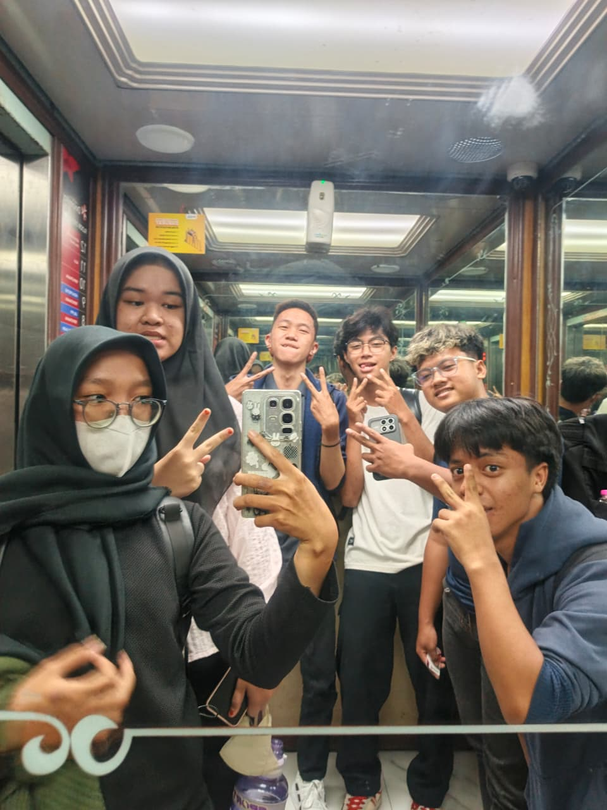

Mahasiswa D3 Sistem Informasi Universitas Dinamika
Nama saya Abita Rizla Faadilah, saya merupakan mahasiswa D3 Sistem Informasi Universitas Dinamika Surabaya dengan NIM 25390100011 dan saat ini berada di semester 26.1.
Saya tinggal di Surabaya, Jawa Timur. Sebelumnya, saya merupakan alumni SMA Negeri 14 Surabaya.
Saat ini saya sedang melanjutkan pendidikan di bidang Sistem Informasi dan belajar berbagai hal yang berkaitan dengan teknologi serta sistem informasi.

*ini merupakan foto saya dan teman-teman saat selesai kelas
Di waktu luang, saya memiliki hobi scroll TikTok untuk mencari hiburan, melihat konten menarik,
dan mengikuti tren yang sedang ramai.
Saya juga ingin terus mengembangkan kemampuan dan pengalaman selama menjadi mahasiswa, baik dalam bidang akademik maupun kegiatan lainnya.
VOKASI NEWS – Ditengah kesibukan tersebut, pasti terdapat mahasiswa yang merasa stres saat menjalani perkuliahan. Pasalnya, selain sibuk dalam perkuliahan, sebagian besar dari mereka juga mengikuti beberapa organisasi atau kegiatan lainnya. Belum lagi memikirkan masalah-masalah kehidupan lainnya yang turut meningkatkan kadar stres dalam tubuh. Nah, berikut beberapa tips yang dapat diterapkan mahasiswa yang sedang mengalami stres saat kuliah.
Istirahat yang Cukup
Kebiasaan mahasiswa pada umumnya adalah begadang, entah itu mengerjakan tugas-tugas yang menumpuk ataupun sibuk mengurus organisasi. Dengan kebiasaan tersebut akan mengakibatkan mahasiswa kurang beristirahat dengan cukup dan dapat menjadi salah satu penyebab stres. Oleh karena itu, istirahatlah dengan cukup ya voks!
Manajemen Waktu dengan Baik
Stres dalam perkuliahan juga dapat disebabkan oleh kurangnya kemampuan kita dalam mengatur aktivitas apa saja yang akan kita lakukan, sehingga tak jarang terjadi pekerjaan yang menumpuk dan menyebabkan stress. Mahasiswa sangat perlu menentukan skala prioritas atas kegiatan yang akan dilakukan, agar dapat terlaksana dengan teratur dan meminimalisir stres.
Jangan Menunda Pekerjaan
Setelah menentukan list pekerjaan berdasarkan prioritas, jangan sekali-kali menundanya. Karena jika pekerjaan tersebut tertunda, maka pekerjaan tersebut tidak akan cepat selesai dan akan semakin menumpuk. Sehingga, akan menimbulkan stres
Lakukan Kegiatan yang Menyenangkan
Dengan melakukan kegiatan yang menyenangkan, maka akan meminimalisir kadar stres yang ada didalam tubuh. Sebab, jika dalam kondisi yang senang biasanya kebanyakan orang akan lebih bersemangat untuk melakukan sesuatu dan bisa berpikir lebih positif. Misalnya dengan menonton drama Korea, membaca novel, jalan-jalan ke mall, dan sejenisnya.
Kelola dan Pahami Emosi dengan Baik
Sangat penting bagi setiap orang untuk dapat mengelola emosi dengan baik. Sebab, apabila kita tidak bisa mengelola emosi dengan baik, kita tidak akan bisa menempatkan reaksi kita terhadap sesuatu dengan tepat. Misalnya, kita sadar bahwa sedang dalam keadaan stres, namun kita malah marah-marah karena tugas belum terselesaikan. Nah, dengan begitu biasanya hanya akan semakin memperkeruh pikiran. Seharusnya, kita melakukan hal sebaliknya agar hal-hal yang dirasa berat menjadi lebih ringan.
Makan dan Olahraga dengan Teratur
Selain beberapa tips diatas, ada yang tak kalah penting, yaitu makan dan olahraga dengan teratur. Jika kedua hal tersebut dilakukan dengan teratur, maka akan membantu mengurangi stres yang ada didalam tubuh. Karena pada saat berolahraga, tubuh akan menjadi lebih rileks dan akan lebih siap untuk melakukan kegiatan lainnya.
Nah, itu tadi beberapa rangkuman tips yang bisa diterapkan mahasiswa Vokasi Unair dalam menghadapi stres saat kuliah, semoga membantu dan tetap semangat ya Voks!
Penulis : Aisyatul Wahdaniyah
Editor: Muhammad Duiqi Alfiansyah
Sumber:
Artikel UNAIR